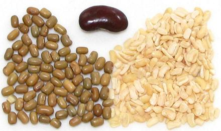
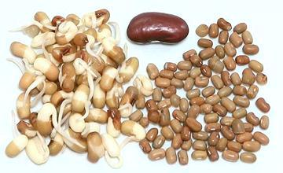

Moth Beans / Matki

[Matki (India); Vigna aconitifolia]
These very tiny beans and their dal provide an unusual texture and an
earthy flavor making them popular in India. They are also favored
for sprouting, as they sprout very quickly. 1 cup of dried moth beans
will need 2 cups of soaking water. Soak 6 hours or more. The Dal is
not soaked before cooking. The photo specimens of Moth were typically
0.20 inch long and 0.11 inch wide (5.1 x 2.8 mm), and the Moth Dal
was typically 0.19 inch long and 0.06 inch thick (4.8 x 1.5 mm).
Moth beans are very tolerant of growing conditions and drought
resistant, but are grown almost entirely in India. The plants are
short and wide, close to the ground, making harvesting more difficult
than for most beans. They are being promoted as a crop for the Sahel,
the semi-arid region that stretches across Africa south of the deserts.
More on Varieties of Bean.

Buying:
Whole Moth Beans, are almost always available
in Indian markets. The Dal is common, but not as common as the beans.
Storing:
Keep beans or dal cool and dry in a sealed
container and mark the container by date purchased. Technically they'll
last for years without spoiling - BUT - in practice a year is about
maximum. With age they cook less and less well until they simply will
not soften, no matter how long you soak them and how long you cook
them.
Soaking & Sprouting:
These beans should be soaked
at least 6 hours. For cooking whole beans, soak with 1/2 Tablespoon of
salt per cup of beans. For sprouting, skip the salt. These beans, if
fresh, sprout with great enthusiasm. They are ready to cook in about
24 hours after soaking. Those to the left in the photo are ready
to cook. For more on sprouting, see our
Sprouting Beans, Peas &
Lentils page.
Cooking:
Whole soaked beans will cook in about
30 minutes. Unsoaked they'll need 45 minutes to an hour, and they
tend to fall apart a lot more than soaked beans. Soaked dal should
be cooked for around 25 minutes, depending on how soft you want it. In
India it's normally cooked until like a thick soup, but I like more
texture.
bp_uradz 110122 - www.clovegarden.com
©Andrew Grygus - agryg@clovegaden.com - Photos on this
page not otherwise credited are © cg1 -
Linking to and non-commercial use of this page permitted.